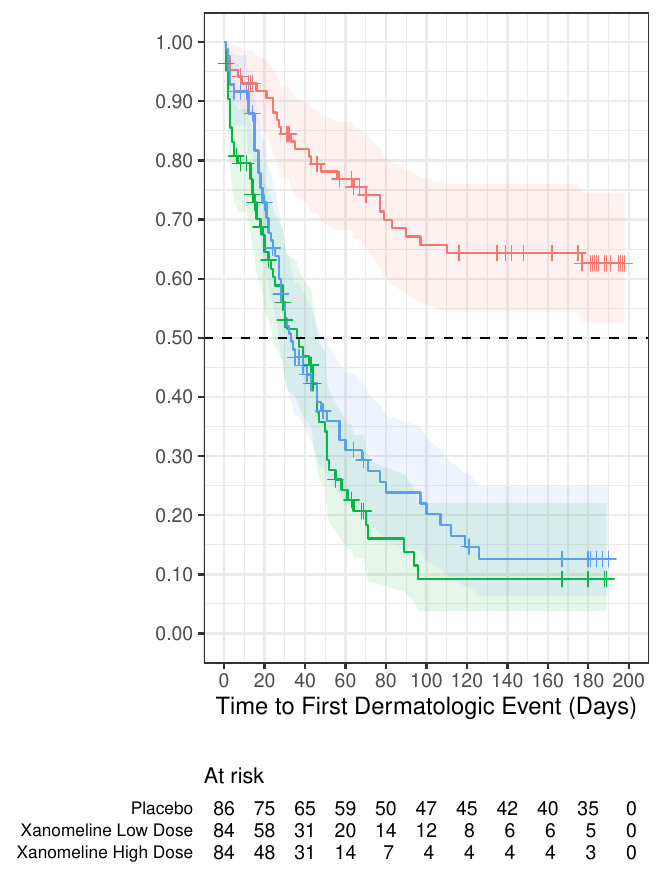
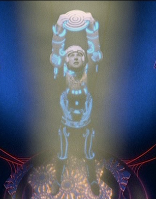
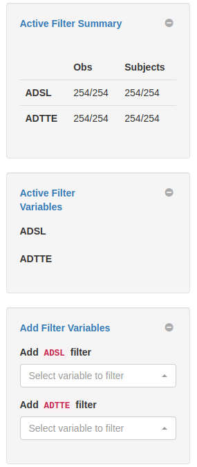
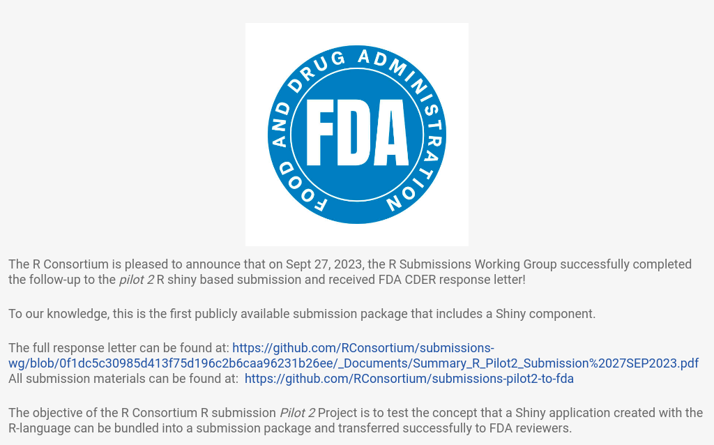
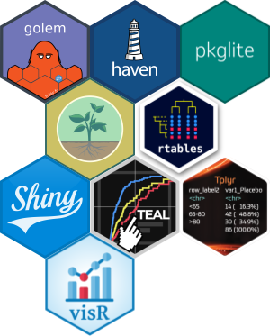
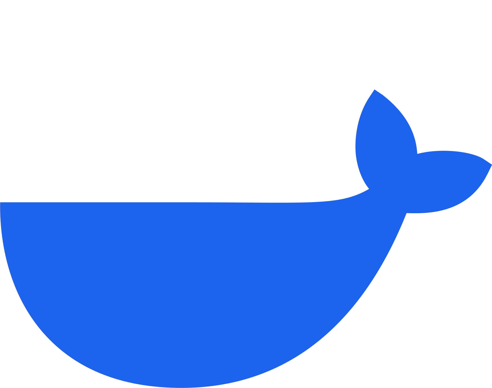
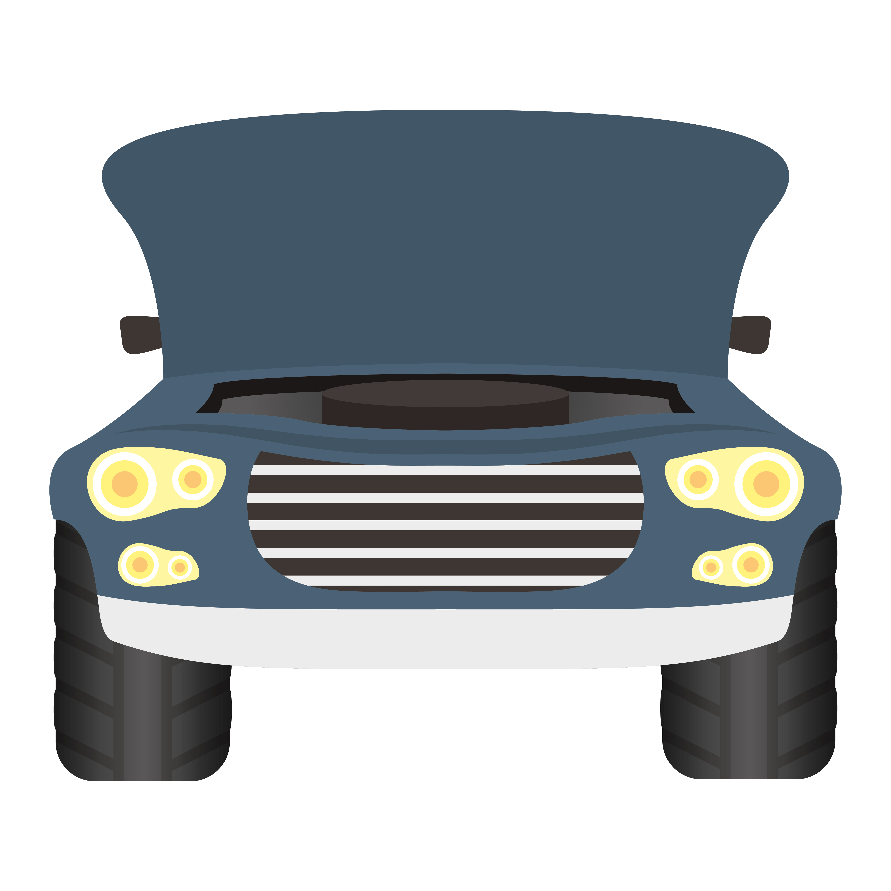
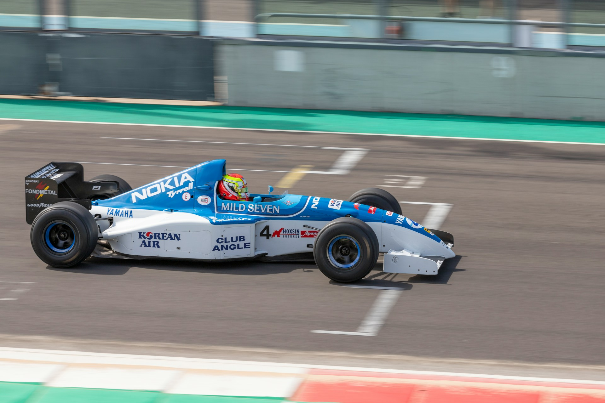
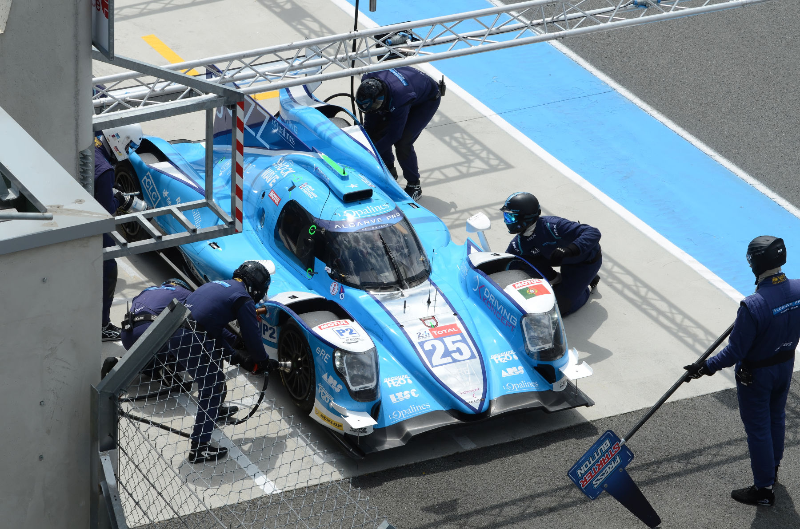
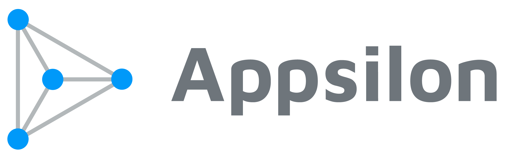

source("utils.R")
build_app()
run_app_webassembly()A Whole New (Open) World
Insights from R-based Submission Pilots
Eric Nantz
Statistician / Developer / Podcaster
Eli Lilly & Company
R/Pharma 2018
R Consortium
The R Consortium is a non-profit organization with the mission to support the:
- R Language
- R Foundation
- R Community
The R Consortium Provides:
- Grants to extend the technical and social infrastructure of the R Ecosystem
- Oversight and governance for working groups that enable industry and government collaboration
- An open forum for the R Community
R Submissions Working Group

- Industry and Regulatory members
- Create submission deliverables with open-source software
- Emulate realistic submission review
- Innovation encouraged!
Foundation - Pilot 1 Submission

- November 2021 - Successful R-based Test Package Submitted to FDA
- Adhered to Electronic Common Technical Document (eCTD) specifications
- Analysis Data Reviewer Guide
- R Package converted to text file using
{pkglite} - ADaM datasets
- TLF output
Many Results
With Great Power…

- Dynamically updates p-values based on filtered observation
- Potential for confusion and misinterpretation
- Compromise: Allow filtering within visualization module only

Install & Execute Application

- Extract submission bundle
- Install R
- (Optionally install RStudio)
- Install Rtools for package compilation
- Install
{renv}R package - Install application package library
- Run application in R process
Install & Execute Application

- Extract submission bundle
- Launch App in web process
- View App in web browser
Shiny



Web-Assembly
Docker

Docker Container: Start your Engines

Encapsulate Pilot 2 Application code
Build container using
Dockerfile.txtRun container in separate process
Launch web browser
WebAssembly: Small Tune-up

Verify packages compatibility with WebR
{golem}{rhino}
Augment
shinylive::exportto inject SAS data setsLaunch web browser
The Extra (Virtual) Mile
Racing to the Final Lap
- June 2025: Transfer Pilot 4 submission packages to FDA
- Utilize
{pkglite}to assemble submission bundle as text file - Long term: Use
.ziparchive format
- Utilize
- Up Next: Pilot 5 Dataset-JSON format
Future Pilots Under Consideration
- Large-scale simulated clinical data
- Reproducible submission environment using Nix
- Generative AI to aid ADRG development
Acknowledgements
Sam Parmar (Pfizer)
Ben Straub (GSK)
Robert Devine (J&J)
Saghir Bashir (Argenx)
Ning Leng (Roche)

Pedro Silva (Jumping Rivers)
André Veríssimo
Vedha Viyash
Pawel Rzymkiewicz (OlympCode)
Paul Schuette
Hye Soo Cho
Youn Kyeong Chang